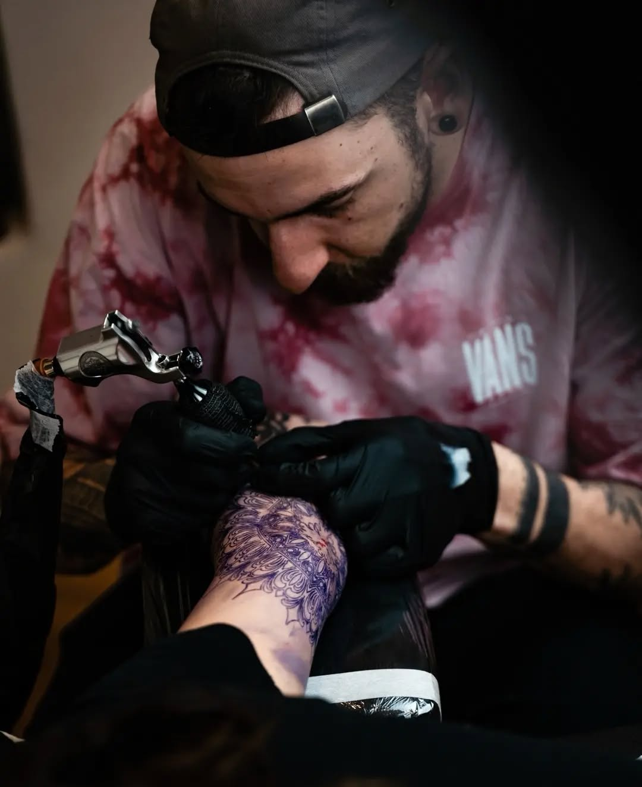

Tattoo artist — Chambéry, France
Geometric.
Realist.
Blackwork.
clm.ink est un tatoueur basé à Chambéry, spécialisé dans les lignes géométriques précises, le réalisme en noir et gris et les pièces blackwork graphiques, pour des projets sur-mesure pensés avec vous.

Sélection de pièces
Portfolio.
Un aperçu de mon travail réalisé en studio : grandes pièces, micro-tattoos et projets sur-mesure. Images en noir et blanc, orientées geometric, realism et blackwork.
Les projets visibles ici ne représentent qu'une partie des pièces réalisées. Retrouvez plus de contenu sur instagram : @clm.ink .
Explorer le portfolio
Mes réalisations, par style.
Retrouvez une sélection de pièces classées par univers : géométrique, réalisme noir et gris ou blackwork graphique. Idéal pour voir comment chaque style vit sur la peau.
Informations pratiques.
Le studio se situe au cœur de Chambéry.
Je travaille uniquement sur
rendez-vous, pour des projets préparés ensemble en amont à partir de vos
envies, références et contraintes.
- Localisation
- clm.ink partage son studio au sein du collectif Purple Line tattoo club , qui réunit six tatoueurs : @suzon_tattoo @m.caligari @bonjour.crapule @cotenoir.ink @clm.ink @primo_kao.tattoo
Contactez moi.
Les réservations se font principalement via Instagram ou par e-mail. Donnez un maximum de détails sur votre projet (zone, style, taille approximative, photos de référence si besoin).
- Un acompte pourra vous être demandé pour bloquer une date.
- Les mineurs doivent être accompagnés d'un représentant légal, avec pièces d'identité.
- Un tatouage reste un acte définitif et invasif. N'hésitez pas à poser toutes vos questions avant de vous engager.